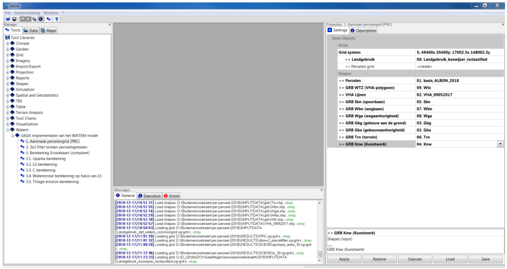
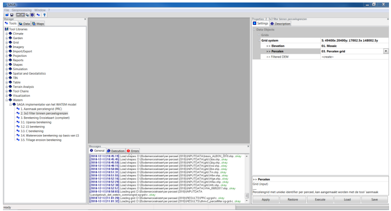
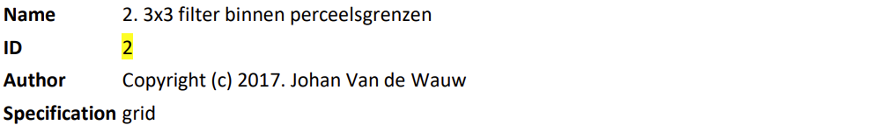
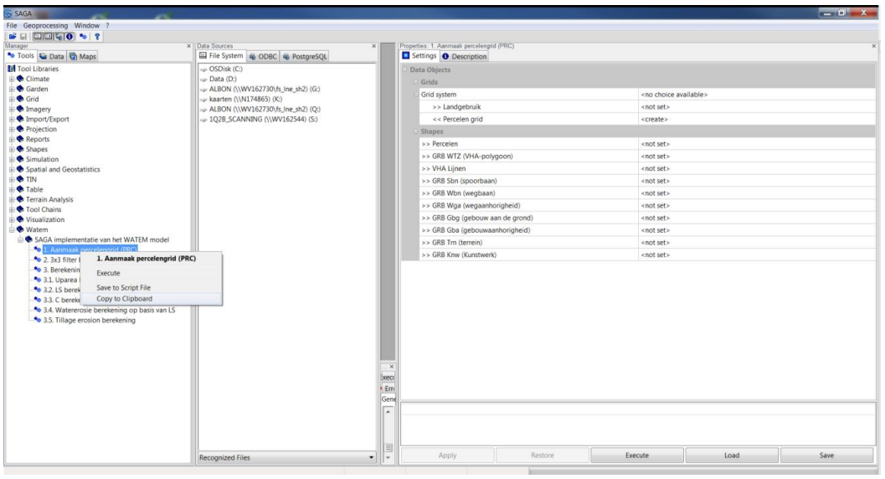

Application in the context of Flanders (extra tooling)¶
On this page, the information for the application of the WaTEM module for data available for Flanders can be found. Note that extra tooling developed in the context of Flanders can be useful for your own case study. Following steps are defined:
Generation of landuse parcels maps (next two sections).
Processing of digital elevation model (section ‘digital elevation model’)
Definition of the K-grid (section ‘K-grid’)
Compute erosion map: see Getting started
Postprocessing of the results
In addition, an examples of :
run in the command line;
script for Flanders
are found on this page.
Landuse map¶
The land use map is created based on the reclassified land use map with forest pointer of the sediment model (file Landgebruik_boswijzer_reclassified’). The reclassification of the ‘Landgebruik_boswijzer’ file is done using the ‘reclassify grid values’ and the file ‘reclasslanduse’ (shown below). You can find this tool under ‘Tool > Grid > Tools > Reclassify Grid Values’.
minimum |
maximum |
new |
|---|---|---|
-6.100000 |
-5.900000 |
1.000000 |
-3.100000 |
-2.900000 |
1000.000000 |
-4.100000 |
-3.900000 |
1.000000 |
-5.100000 |
-4.900000 |
-1.000000 |
9.900000 |
10.100000 |
1.000000 |
Table 2: example of a table with values
Note: value -2 remains -2 in the new map and is therefore not converted.
Parcels map¶
The plot grid can be created in SAGA using the module ‘1. (PRC)’. The plot grid is created from the files listed below. The order used is this: (where later map layers are superimposed on previous map layers)
Land use map ‘Land use_forest_reclassified’ (see next section)
10000: forest
1: other land use
-2: built-up
GRB layers(geopoint - dataset GRBgis)
GBG (building to land), GBA (building attachment), WGA (road attachment), KNW (structure), TRN (terrain): built-up (-2)
Parcel map
Get values between 2 and 9999
Waterways and roads
SBN (railway line), WBN (road line) (-2)
WLas (VHA lines) [For the erosion map 2018, the shape ‘VHA_09052017.shp’ was used was used and not WLas from GRB (because VHA was more recent)], WTZ (VHA polygons) (-1)

Figure 4: module ‘1. Creation of parcel grid (PRC)’.
Digital elevation model¶
The elevation model used is the DHMVII from Agency Information Flanders. The different files were pasted together using the mosaic tool: Grid mosaic. The default options were used (the extent of this mosaic is also the extent that was further used).
Optionally, this input grid can also be filtered. This can be done with the Grid Filter tool (smooth filter with radius 2 and square kernel). This method was abandoned in the final creation of the erosion map to proceed with a grid filter per plot.
A second optional step is to perform a 3x3 filter on the DTM. This filters the DTM but only considers cells that lie within the same plot. This filter can be done in SAGA using the tool ‘2. 3x3 filter within plot boundaries’. This option is on by default because in 2017 it was decided to use this option to be used starting from the calculation of the erosion map 2018.

Figure 6: Module 2. 3x3 filter within plot boundaries
K-grid¶
The K-map consists of the digitised version of the polygon map based on the digital soil map_2_0. Following K-values were used for the texture class from the soil map:
Texture |
K-value |
information |
|---|---|---|
A |
0.04200 |
|
E |
0.02750 |
|
L |
0.04000 |
|
O |
Interpolation |
|
P |
0.02500 |
|
S |
0.02000 |
|
U |
0.02250 |
From erosion map2018 onwards, for all of the erosion map, the value 0.02250 was used. In the erosion map 2016, the value of 0.02750 used in the eastern K-map; In the western K-map of 2016, the value was indeed 0,02250. In the 2017 erosion map, this meant the value was for all of Flanders, the value 0.02750 was used. |
Z |
0.01200 |
Table 1: Example of a K-map. Erosion map 2016/2017/2018 can be found here, here and here
Where there is missing data, it was filled with a nearest neighbour algorithm. In SAGA, it is not directly possible to use nearest neighbour within a grid. Therefore, we convert the grid to a point file. If we were to do this at 5m, this becomes quickly become much too slow, however, and therefore a 25m grid is used for interpolation. The original grid is subtracted from this afterwards.
The creation of the K grid was done in the following way:
Import K-map from the postgresql working database soil (production): take view ‘k_metzeepolders’ under schema ‘bodemkaart_afgeleid’
Shapes to grid - using the extent of the digital elevation model
Tools Grid\Gridding\Shapes to Grid
Convert grid to 25m x 25m
Tools\Grid\Resampling
Upscaling method: Majority - this ensures that a single edge pixel does not affect the does not affect the map too much
Border outside Belgium artificially set to a known value: All values located more than 3,000 metres outside Belgium were set to K-value -99. That way these values are not interpolated. This in order to distinguish between unknown values (no data) that have to be interpolated and values for which a K-value is deliberately not calculated. After interpolation, the no-data value is set to -99, and values outside Belgium are therefore not used further. Convert the grid 25x25 metres to points. Grid values to points - without NA values Tools Shapes\Grid Tools\Add Grid Values to Points
Interpolation on a 5m grid: the points obtained above are interpolated back interpolated at 5m (although the points at which it is determined are thus at 25m).
Grid\Gridding\Interpolation from Points
Select Nearest Neighbour
Set No-data value of this grid to -99 (to omit areas outside Belgium).
Lay original grid over interpolated grid (grid patching). Where values are effectively are known, we obviously want to work with the known values and not with the interpolated values.
Tools\Grid\Patching
Grid: original grid
Patch grid: the interpolated grid
Postprocessing¶
To aggregate grid cells by plot, the tool “Add Grid Values to shapes” or if more statistics are required “Grid Statistics for polygons” can be used in SAGA.
Here it is important to use the standard method, i.e. assigning a cell to a polygon if the centre of the cell lies in the polygon. After all, this is the same algorithm that was used when the grid was created. In the module “Add Grid Values to shapes” this runs correctly automatically, in the module “Grid statistics for polygons” you have to choose method 1 (polygon wise (cell centres)).
Run in command line¶
It is also possible to run the module(s) from the command line. This is particularly useful if several scenarios need to be executed. This takes the following form.
saga_cmd watem 2 -DEM=DEM.sg-grd-z -PRC=prc.sg-grd-z -DEM_FILTER=DEM-filtered.sggrd-z
Here the first command (watem) indicates which library is used, and the second (in this case 2) indicates which tool within the library is used. In this example, the tool 3x3 filter within plot boundaries is called (identifier 2). This information can be derived from the tools’ documentation given earlier:

The tool performs a 3x3 filter on a digital elevation model using only cells within the plot.
Name |
Type |
Identifier |
Description |
Constraints |
|---|---|---|---|---|
Input |
||||
Elevation |
Grid (input) |
DEM |
Digital elevation model. |
|
Percelen |
Grid (input) |
PRC |
Plot grid with unique identifier per plot, can be created with the tool ‘create plot grid’ |
|
Output |
||||
Filtered DEM |
Grid (output) |
DEM_FILTER |
DEM filtered with a 3x3 filter active only within the plot boundaries. |
It is also possible to create a sample script from the tool manager in the graphical interface (save to script file or copy to clipboard).

Figure 17: A script can also be created from the graphical interface
Example script for Flanders¶
@ECHO OFF
REM SET SAGA_MLB=C:\SAGA\Tools
SET PATH=D:\erosiekaart\2018\saga_watem_1.7\saga_vc_x64
set OUTPUT=D:\erosiekaart\2018\RESULTS
set INPUT=D:\erosiekaart\2018\INPUTDATA
set K=%INPUT%\K3.tif
set GRB=D:\erosiekaart\2018\INPUTDATA\GRB
if not exist "%OUTPUT%" (mkdir "%OUTPUT%")
REM Tool: Aanmaak percelengrid
saga_cmd watem 1 -PARCEL_SHAPES="%INPUT%\basis_ALBON_2018.shp" -
LANDUSE="%INPUT%\Landgebruik_boswijzer_reclassified.sg-grd-z" -PRC="%OUTPUT%\PRC.sg-
grd-z" -WTZ="%GRB%\wtz.shp" -WLAS="%INPUT%\VHA_09052017.shp" -SBN="%GRB%\sbn.shp"
WBN="%GRB%\wbn.shp" -WGA="%GRB%\wga.shp" -GBG="%GRB%\gbg.shp" -GBA="%GRB%\gba.shp" -
TRN="%GRB%\trn.shp" -KNW="%GRB%\knw.shp"
REM Tool: 3x3 binnen perceel
saga_cmd watem 2 -DEM="%INPUT%\dhmv2-mosaic.sg-grd-z" -PRC="%OUTPUT%\PRC.sg-grd-z" -
DEM_FILTER="%OUTPUT%\dhmv2_parcelfilter.sg-grd-z"
REM Tool: Complete Berekening Erosiekaart
REM scenario 5: nieuw dem, nieuwe landuse, 3x3 filter (enkel in veld) - flow vanuit
pit (max 4 pixels) + slope (LS) enkel binnen veld berekend
set SCEN=%OUTPUT%\WAT30_2018
if not exist "%SCEN%" (mkdir "%SCEN%")
saga_cmd watem 3 -DEM="%OUTPUT%\dhmv2_parcelfilter.sg-grd-z" -PRC="%OUTPUT%\PRC.sg-
grd-z" -K="%K%" -PIT="%SCEN%\Pit.sg-grd-z" -UPSLOPE_AREA="%SCEN%\upslope_area_30.sg-
grd-z" -LS="%SCEN%\ls_30.sg-grd-z" -R=880.000000 -P=1.000000 -CORR=1.400000 -
WATER_EROSION="%SCEN%\WAT30_2018.sg-grd-z" -PCTOCROP=70.000000 -
PCTOFOREST=100.000000 -SAVE_MEMORY=1 -PIT_FLOW=1 -PIT_RADIUS=4 -LS_USE_PRC=1
set SCEN=%OUTPUT%\WAT00_2018
if not exist "%SCEN%" (mkdir "%SCEN%")
REM berekening watererosie zonder connectivitiet
saga_cmd watem 3 -DEM="%OUTPUT%\dhmv2_parcelfilter.sg-grd-z" -PRC="%OUTPUT%\PRC.sg-
grd-z" -K="%K%" -PIT="%SCEN%\Pit.sg-grd-z" -UPSLOPE_AREA="%SCEN%\upslope_area_00.sg-
grd-z" -LS="%SCEN%\ls_00.sg-grd-z" -R=880.000000 -P=1.000000 -CORR=1.400000 -
WATER_EROSION="%SCEN%\WAT00_2018.sg-grd-z" -PCTOCROP=100.000000 -
PCTOFOREST=100.000000 -SAVE_MEMORY=1 -PIT_FLOW=1 -PIT_RADIUS=4 -LS_USE_PRC=1
REM Tot slot de waarden van de grids toevoegen aan de shapefile
saga_cmd shapes_grid 1 -SHAPES="%INPUT%\basis_ALBON_2018.shp" -
GRIDS="%OUTPUT%\WAT30_2018\WAT30_2018.sg-grd-z;%OUTPUT%\WAT00_2018\WAT00_2018.sg-
grd-z" -RESULT="%OUTPUT%\erosie_berekend.shp"
PAUSE
Extra information¶
For extra information see the document on the Calculation of the potential erosion map per plot in SAGA GIS from the Flemish Department of Environment (in Dutch).